PREPARACIÓN DE HALLACAS MARACUCHAS
Tradición familiar navideña con sabor auténtico zuliano
Todos los años religiosamente he preparado mis Hallacas, siguiendo siempre lo aprendido cuando niño, con mi mamá haciendo nuestras Hallacas Navideñas y de Fin de Año. También aplico conocimientos de una o dos veces que preparamos hallacas en casa de mi tía Stella.
Lo bonito de la realización de las hallacas es la reunión de toda la familia y la asignación de tareas a cada uno de los participantes. Una persona que domine la masa, esta es la encargada de amasar la harina, los que se destaquen amarrando, bueno amarrarán, los más experimentados extenderán la masa, echarán una y media o dos cucharadas de guiso a la masa extendida y comienza a formarse una deliciosa hallaca. Este proceso se repite una y otra vez hasta concluir la faena con cientos de hallacas preparadas para degustar.
Quiero compartir con todos los que por una u otra razón, se animen a realizar una Hallaca con Sabor Maracucho o Zuliano, para ser más específico CABIMERAS.
Ingredientes
Rendimiento: 150 hallacas
- 3 kg carne de cerdo
- 2 kg carne de res
- 2 kg papas
- ½ kg zanahorias
- 1 kg cebollas de cabezas
- 1/2 kg pimentones
- Cebolla en rama
- Ajies
- Cilantros
- 2 cabezas de Ajos
- Ajos porros
- ½ kg ciruelas pasas
- ½ kg garbanzos
- Panela o papelón
- Onoto o achote
- Aceituna rellenas
- Alcaparras
- Encurtidos
- Salsa inglesa
- ½ lts aceite
- Sal
- Adobo
- Comino
- Curry
- Orégano
- Laurel
- Clavos de olor
- 3 paquetes de hojas de plátano
- 4 paquetes de Harina de maíz
- 2 rollos de pavilo
Preparación
Con anticipación, ablandar las Carnes de Puercos y Res. Al Agua para ablandar las carnes, agregar Varias hojas de Laurel, Sal al gusto y 8 clavitos de olor. No dejar demasiado blanda las carnes, porque luego, durante la preparación del guiso se continuará el proceso de coción.
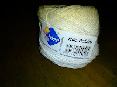
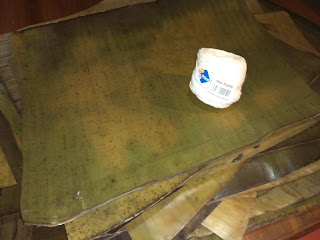
El agua que nos ha quedado de cocinar las Carnes. No botarla; poner a reducir esta agua, para luego ser usada en la preparación del guiso.
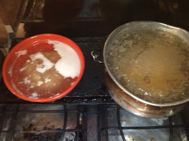
Picar las Carnes en cuadritos pequeños o de un tamaño al gusto. La grasa o Manteca, sobrante del Cerdo; les recomiendo, picarlas en trocitos bien pequeños y colocarla en un caldero con un poquito de agua. Cocinar hasta que la manteca se haga chicharrón; esta manteca que nos resulta de este proceso la utilizaremos para agregarla a la harina de maíz.
Picar Vegetales finamente, Calentar el ½ lts de Aceite junto con el Achote, esto para darle color al aceite y por ende al Guiso. Se sofríe los Vegetales, hasta que estén tiernos. En este momento añadir: Sal, Adobo, Comino, el Ajo machacado, la Salsa Inglesa; todo al gusto.
Añadir el agua que nos quedó anteriormente y que habíamos reservado para el guiso. Disolver una Panela en agua Caliente, poquita agua y luego verterla al guiso. (mejor si tomamos un poquito del agua del guiso y disolvemos la panela).
Agregar los Garbanzos, las Alcaparras, la Mitad de las Aceitunas y la mitad de las Ciruelas Pasas. Agregar las Carnes. Y corregir los sabores. Dejar secar lo suficiente, hasta quedar un poquito jugoso.
Las Papas y Zanahorias deben de estar previamente cocinadas y picadas (en cuadritos pequeños). Y agregar cuando el guiso este listo, incluso ya apagado, o sea fuera de la cocina. La mitad restantes de las Aceitunas y Ciruelas se le añaden una vez este frío el guiso. O justo antes de comenzar la preparación de las hallacas.
Amasar; un (1) paquete de Harina de Maíz, con la Manteca que obtuvimos del Puerco y el Onoto para darle color. Y prepara las bolas de masa (rinde aprox. 23 a 25 bolas), dejarlas listas para extender sobre la hoja.
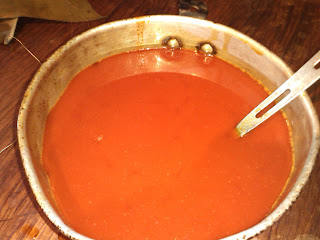
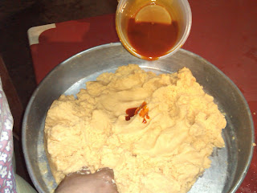
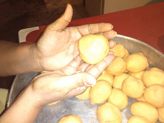
Debemos untar con aceite y onoto la hojas antes de extender la masa. Extender la Masa sobre la hoja y creo que no hace falta más explicación.
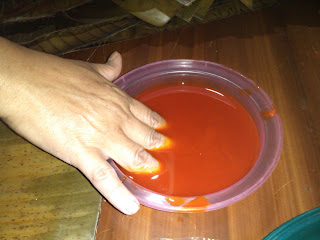
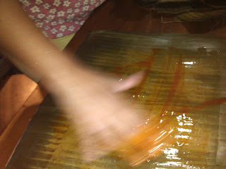
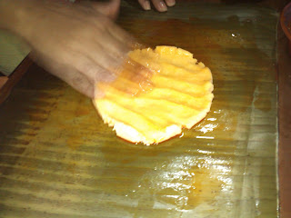
Luego de extender la masa, agregar una y media o dos cucharadas del guiso que hemos preparado previamente, poner Una y Media o Dos cucharadas en el centro de la masa extendida.
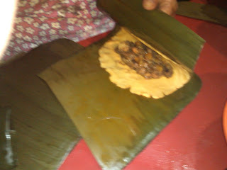
Envolver con la hoja de plátano, cuidadosamente para no romper la hoja. Mi costumbre es, ir acumulando varias hallacas para luego amarrarlas. La manera de amarrar las hallacas, paso a paso.
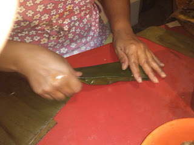
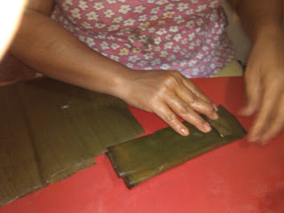
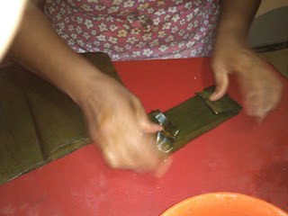
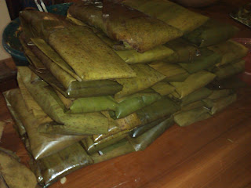
Mi constumbre es, ir acumulando varias hallacas para luego comenzar a amarrarlas.
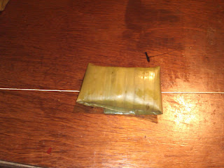
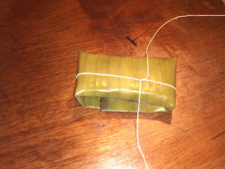
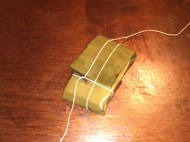
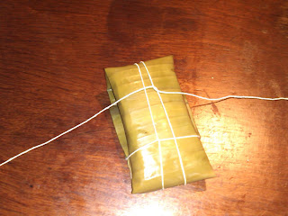

Esta es la manera de amarrar mis hallacas, step by step.
Pasar las hallacas por agua hirviendo por espacio de 30 min.
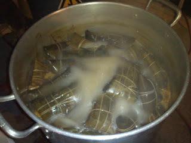
En este punto estaremos dispuestos a catar el sabor de nuestras hallacas, las misma deben dejarse enfriar y meter a la nevera, cuando dispongamos de comer nuestras hallacas la calentamos nuevamente y a disfrutar.
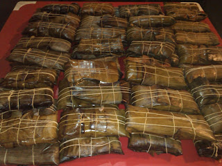
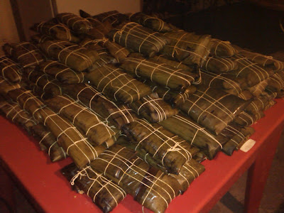
Al fin me he decidido a montar mi receta que estaba esperando alrededor de dos años para publicarla en la web y compartir con el mundo entero la manera en la que preparo mis excelentes hallacas.